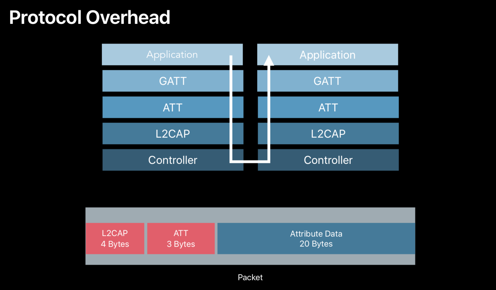

0x01 - 概览
蓝牙技术最早是在1994年由爱立信发明的，主要是为了研究在移动电话和其他配件间进行低功耗、低成本无线通信连接的方法。经过十几年的发展，于2010年7月7号推出了蓝牙4.0规范，4.0之前的蓝牙统称为经典蓝牙，4.0之后又加入了低功耗蓝牙，目前最新的版本是蓝牙5.0规范，于2016年6月发布。
蓝牙的两种类型
- 蓝牙基础率/增强数据率 (BR/EDR)，以点对点（P2P）网络拓扑结构建立一对一（1:1）设备通信，主要用于无线扬声器、耳机和免提车载系统；
- 低耗能 (LE) 蓝牙，使用多个网络拓扑结构，包括点对点、广播和网格，主要用于健身追踪器、健康监测仪等联网设备产品。
存在哪些差异？
蓝牙 BR/EDR—可建立相对较短距离的持续无线连接，因此非常适用于流式音频等应用蓝牙 LE—可建立短时间的长距离无线电连接，非常适用于无需持续连接但依赖电池具有较长寿命的的物联网 (IoT) 应用双模—双模芯片可支持需要连接 BR/EDR 设备（例如音频耳机）以及 LE 设备（例如穿戴设备或零售信标）的单一设备（例如智能手机或平板电脑）
特别需要注意的一点是：
对于单模的经典蓝牙和低功耗蓝牙是不能相互通信的。所以在选型的时候需要特别注意，是选择单模的还是双模的，单模的话需要同是经典蓝牙或者低功耗蓝牙才行。
0x02 - 蓝牙的功能与局限
目前常用的短距离无线通信技术有蓝牙、WIFI、Zigbee。
为什么选择蓝牙呢？很关键的一个原因是蓝牙的低成本和低耗电的特性。
| 技术规范 | 经典蓝牙 | 低功耗蓝牙 |
|---|---|---|
| 无线电频率 | 2.4 GHz | 2.4GHz |
| 距离 | 10米 ~100米 | 30米 |
| 无线传输速率 | 1~3 Mb/s | 1 Mb/s |
| 应用吞吐量 | 0.7~2.1 Mb/s | 0.2 Mb/s |
| 节点单元 | 7~16777184 | 未定义（理论最大值为2^32） |
参考来源：蓝牙 - 维基百科
上面表格可以看到，无论是经典蓝牙还是低功耗蓝牙，本身的传输速率并不低。实际测试中，iOS 的传输速率只能达到 100byte/s ，是因为 iOS 系统做了限制了（越狱之后，会有一些第三方插件如AIRBLUE SHARING，可以支持两个手机之间用蓝牙传输文件，速度可以达到80Kb/s）
0x03 - 使用
这里主要讨论蓝牙4.0的使用，并不是所有手机都支持蓝牙4.0技术，iPhone需要4S以上的手机，安卓需要系统4.3及以上的版本。

（ 图 1-1 ）
开发之前，iOS 10.0之后的系统都需要在Info.plist里面添加请求使用蓝牙功能模块的key NSBluetoothPeripheralUsageDescription，否则会导致功能不可用或者是崩溃！
如上图，蓝牙模块的主要核心是由Central和Peripheral组成。
Central： 主要负责发现和连接外设，读写外设的数据Peripheral： 主要负责监测收集、对外广播和发送数据。

CBPeripheral是由一个或者多个CBService组成，CBService又是由多个CBCharacteristic组成。
CBService： Peripheral 对外提供的服务，是一组功能或数据的集合；CBCharacteristic： CBService 的子集，某个功能的具体特性，用于存放收集的的数据。
从CS架构模式来看 CoreBluetooth 提供的 Central 和 Peripheral。刚开始看的时候很容易把 Central 理解成 Server，其实刚好相反，Peripheral 才是我们的 Server。
如 (图 1-1) 所示，Peripheral 和 Central 之间建立的是一对多的关系。每个Peripheral 会以广播的模式告诉外界自己能提供哪些 Service，这里 Service 的概念和我们传统CS架构当中的 Service 基本是一致的，每个 PeriPheral 可以提供多个 Service，而每个 Service 呢，会包含多个 characteristic，characteristic 是个陌生但十分关键的概念，可以把 characteristic 理解成一个 Service 模块具体提供哪些服务，比如一个心率监测 Service 同时包含心率测量 characteristic 和地理位置定位characteristic。
Peripheral 作为 Server，Central 作为 Client，Peripheral 广播自己的 Service和 characteristic，Central 订阅某一个具体的 characteristic，Peripheral 就和Central 之间通过 characteristic 建立了一个双向的数据通道，整个模型非常简洁而且符合我们CS的架构体系。
接下来具体看下 CoreBluetooth 的相关API
Server 端
Peripheral
- 创建 Peripheral ，也就是我们的 Server
- 生成 Service 以备添加到 Peripheral 中
- 生成 characteristics 以备添加到 Service 中
- 建立 Peripheral、Service、characteristics 三者之间的关系并开始广播服务
- 创建 Peripheral ，也就是我们的 Server
1 | _peripheral = [[CBPeripheralManager alloc] initWithDelegate:self queue:nil]; |
- 生成 Service 以备添加到 Peripheral 中
1 | CBMutableService *transferService = [[CBMutableService alloc] initWithType:[CBUUID UUIDWithString:TRANSFER_SERVICE_UUID] primary:YES]; |
- 生成 characteristics 以备添加到 Service 中
1 | self.transferCharacteristic = [[CBMutableCharacteristic alloc] initWithType:[CBUUID UUIDWithString:TRANSFER_CHARACTERISTIC_UUID] |
- 建立 Peripheral、Service、characteristics 三者之间的关系并开始广播服务
1 | //建立关系 |
Client 端
Central
- 创建 Central
- 扫描可用的 Peripheral
- 连接 Peripheral
- 连接之后查找 Peripheral 下可用的 Service
- 找到 Service 之后，进一步查找需要的 Characteristics 并订阅
- 创建 Central:
1 | _central = [[CBCentralManager alloc] initWithDelegate:self queue:nil]; |
- 扫描可用的 Peripheral:
1 | [self.central scanForPeripheralsWithServices:@[[CBUUID UUIDWithString:TRANSFER_SERVICE_UUID]] |
- 扫描到 Peripheral 之后连接:
1 | [self.central connectPeripheral:targetPeripheral options:nil]; |
- 连接之后查找 Peripheral 下可用的 Service：
1 | [peripheral discoverServices:@[[CBUUID UUIDWithString:TRANSFER_SERVICE_UUID]]]; |
- 找到 Service 之后，进一步查找需要的 Characteristics 并订阅:
1 | //查找Characteristics |
订阅之后 Central 和 Peripheral 之间就建立了一个双向的数据通道，后续二者之间的数据传输(读写)就可以通过 characteristic 来完成了。
数据传输
先看下 Peripheral 是如何向 Central 发送数据的，当数据有更新的时候 Peripheral 会向自己的 characteristics 写数据。
1 | [self.peripheral updateValue:data forCharacteristic:self.transferCharacteristic onSubscribedCentrals:@[self.central]]; |
Central 之前有订阅过该 characteristics ，当 characteristics 有变化的时候，Central 那一端通过回调会收到来自 Peripheral 的数据流：
1 | - (void)peripheral:(CBPeripheral *)peripheral didUpdateValueForCharacteristic:(CBCharacteristic *)characteristic error:(NSError *)error; |
当 Central 需要对 Peripheral 回写数据的时候，则通过调用如下的接口进行：
1 | [self.discoveredPeripheral writeValue:data forCharacteristic:self.discoveredCharacterstic type:CBCharacteristicWriteWithoutResponse]; |
Peripheral 端会收到如下回调：
1 | - (void)peripheralManager:(CBPeripheralManager *)peripheral didReceiveWriteRequests:(NSArray<CBATTRequest *> *)requests |
通过读取 request 中的 value 就可以获取到 Central 发送过来的数据了。
对于少量的数据传输，使用以上的接口便可以满足我们的需求，当对于固件升级（Air OTA）这种需要传输大量数据的，有什么好的方案可以实现呢？
首先我们来看一个图：

低功耗蓝牙标准协议里面定义了最大的 MTU 为 27 Bytes，packet 在向下传输的时候，经过GATT、ATT又会损耗掉7 Btyes，所以一个包最终可用的最大传输 MTU 为 20 Bytes。并且，一旦你的数据通过了控制器，硬件又会添加链路层安全并且 CRC 也会延长传输数据包的时间
为了提高传输数据量，苹果又做了哪些优化呢？
- 提高单位时间内的写入次数（Write Without Response）
- 拓展数据长度(Extended Data Length),蓝牙4.2之后支持
- L2CAP + EDL
- 缩短请求间隔
提高单位时间内的写入次数（Write Without Response）
如上图，正常写入一个数据包需要花费 2 个时间间隔（一个时间间隔用于写入，一个时间间隔用于回复），这种方式的写入是非常稀疏的，并没有很好地利用可用的带宽。
Core Bluetooth 在底层做了一个可靠的可持续写入且不需要等回包的机制，以增加单位时间内写入的频次，提高发送的数据量。
根据苹果官方说法，只要根据文档配置API就可以安全可靠的发送数据：
1 | CB_EXTERN_CLASS @interface CBPeripheral : CBPeer |
1 | CB_EXTERN_CLASS @interface CBCentral : CBPeer |
具体的 MTU 则是系统根据连接事件长度和系统配置来计算的。另外，外设也必须支持最大 MTU 以达到最大的数据吞吐量。
拓展数据长度(蓝牙4.2之后才支持)
相比之前的 27 bytes，4.2 之后的数据包支持最大251 bytes，单是一个数据包就提高了 9 倍多了，再加上不回包持续写入的优化，整整提高了10倍的传输量。
L2CAP + EDL
直接去掉了 GATT，ATT 的限制(比如限制最大属性大小为 512)，所以我们现在能够写入更大的值，也可以使用更大的 MTU，数据的吞吐量也会增加很多，达到 200 kbps 左右。
缩短连接间隔（Faster Connection Interval）
在 Core Bluetooth 中，请求连接的间隔是15ms，所以当你在更新你的固件的时候，你可以请求一个参数更新并将时间间隔的最小值和最大值设置为15ms。
从上面这张图可以看到，要做固件升级的话最优的解决方案是：L2CAP+EDL+15ms
后台处理
由于 iOS 系统对后台运行做了很多限制，所以必须明确你开发的 App 是属于前台 App 还是后台App 还是二者都要支持的。
默认情况下，不管是Central还是Peripheral，当App处于后台或者被挂起的时候蓝牙功能都是无法使用的。因此，你需要显示的去设置后台运行模式。
Info.plist添加UIBackgroundModes的key，value 根据需要如果是Central就设置为bluetooth-central；如果是 Peripheral 就设置为bluetooth-central
后台 Central
在后台运行 Central 的时候，它还是跟前台一样可以发现和连接到外设，并且和外设进行交互读写数据，但在扫描时候还是有点不同：
- 扫描可选key
CBCentralManagerScanOptionAllowDuplicatesKey会被忽略，扫描到的多个广播信号会被合并成一个事件； - 后台模式下，扫描的时间间隔会变长，因此会比前台花更多的时间去发现外设。
后台 Peripheral
同样的，后台 Peripheral 也可以进行广播，接收连接请求，读写数据。当广播信号的时候还是跟前台有点不同：
- 广播的key
CBAdvertisementDataLocalNameKey会被忽略，外设的本地名字不会被广播； - 包含
CBAdvertisementDataServiceUUIDsKeykey的服务UUIDSs被放置在一个“溢出”区域，它们只能被显式扫描它们的iOS设备所发现； - 后台模式下，发送广播包的数量会减少。
在后台执行长（long-term）任务
想象一个这样的场景，你开发了一款由蓝牙开门的App，当你走近门的时候就自动连接并解锁。远离门的时候断开连接就锁上了。当用户长时间离开家或者出差几天，这时候App会被系统挂起或者杀死，当你回到家的时候需要App能够自动被唤醒然后解锁门。
对于这种类似的App，就需要蓝牙在后台能够长时间保活。
Core BlueBooth 利用状态的保存和恢复来解决这种问题。可以通过制定一个唯一的标识符，要去系统在挂起或者杀死App的时候保存当前的状态，然后在恢复的时候使用这个标识符恢复到被杀死前的状态，以达到长时间“保活”的目的。
添加状态保存和恢复支持
Core Bluetooth中的状态保存与恢复是可选的特性，需要程序的支持才能工作。我们可以按照以下步骤来添加这一特性的支持：
- (必要步骤)当分配及初始化Central或Peripheral管理器对象时，选择性加入状态保存与恢复。
- (必要步骤)在系统重启程序时，重新初始化Central或Peripheral管理器对象
- (必要步骤)实现适当的恢复代理方法
- (可选步骤)更新Central或Peripheral管理器初始化过程
选择性加入状态保存与恢复
在初始化 Central 的时候制定存储的key CBCentralManagerOptionRestoreIdentifierKey
1 | myCentralManager = [[CBCentralManager alloc] initWithDelegate:self queue:nil options:@{ CBCentralManagerOptionRestoreIdentifierKey: @"myCentralManagerIdentifier" }]; |
重新初始化Central或Peripheral管理器对象
当系统在后台重启程序时，我们所需要做的第一件事就是使用恢复标识来重新初始化这些对象。我们可以通过在程序代理对象的application:didFinishLaunchingWithOptions:方法中，使用合适的启动选项键来访问管理器对象的列表(这个列表是程序关闭是系统为程序保存的)。
1 | - (BOOL)application:(UIApplication *)application didFinishLaunchingWithOptions:(NSDictionary *)launchOptions |
有了这个恢复标识的列表后，我们就可以重新初始化我们所需要的管理器对象了。
实现适当的恢复代理方法
重新初始化Central或Peripheral管理器对象后，我们通过使用蓝牙系统的状态同步这些对象的状态来恢复它们。此时，我们需要实现一些恢复代理方法。对于Central管理器，我们实现centralManager:willRestoreState:代理方法；对于Peripheral管理器管理器，我们实现peripheralManager:willRestoreState:代理方法。
Note:
对于选择性加入保存与恢复特性的应用来说，这些方法是程序启动到后台以完成一些蓝牙相关任务所调用的第一个方法。而对于非选择性加入特性的应用来说，会首先调用centralManagerDidUpdateState:和peripheralManagerDidUpdateState:代理方法。
1 | - (void)centralManager:(CBCentralManager *)central willRestoreState:(NSDictionary *)state |
通过CBCentralManagerRestoredStatePeripheralsKey键来获取Central管理器已连接的或尝试连接的所有Peripheral设备的列表，获取到这个列表后，我们便可以根据需要来做处理。
更新初始化过程
在实现了前面的三个步骤后，我们可能想更新我们的管理器的初始化过程。虽然这一步是可选的，但如果要确认任务是否运行正常时会非常有用。例如，我们的程序可能在解析所连接的Peripheral设备的数据的过程中被关闭。当程序使用这个Peripheral设备作恢复操作时，无法知道数据处理到哪了。我们需要确保程序从数据操作停止的位置继续开始操作。
如下面的代码展示了在centralManagerDidUpdateState:代理方法中初始化程序操作时，我们可以找出是否成功发现了被恢复的Peripheral设备的指定服务：
1 | NSUInteger serviceUUIDIndex = [peripheral.services indexOfObjectPassingTest:^BOOL(CBService *obj, NSUInteger index, BOOL *stop) { |
如上例所述，如果系统在程序完成搜索服务时关闭了应用，则通过调用discoverServices:方法在关闭的那个点开始解析恢复的Peripheral数据。如果程序成功搜索到服务，我们可以确认是否搜索到正确的特性。通过更新初始化过程，我们可以确保在正确的时间调用正确的方法。
虽然我们可能需要声明应用支持Core Bluetooth后台执行模式，以完成特定的任务，但总是应该慎重考虑执行后台操作。因为执行太多的蓝牙相关任务需要使用iOS设备的内置无线电，而无线电的使用会影响到电池的寿命，所以尽量减少在后台执行的任务。任何会被蓝牙相关任务唤醒的应用应该尽快处理任务并在完成时重新挂起。
下面是一些基础的准则：
- 应用应该是基于会话的，并提供接口以允许用户决定什么时候开始及结束蓝牙相关事件的分发。
- 一旦被唤醒，一个应用大概有10s的时间来完成任务。理想情况下，应用应该尽快完成任务并重新挂起。系统可以对执行时间太长的后台任务进行限流甚至杀死。
- 应用被唤醒时，不应该执行一些无关紧要的操作。
参考链接：
Performing Common Role Central Tasks